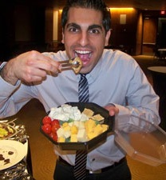

John Kennedy Kelly Scientist

Kelly Lab 2010 participates in Brew-to-brew run, a relay race from Kansas City to Lawrence.

Kelly Lab 2020 displays pandemic fashion sense.
Left to right: Sharif Tusuubira, Apolonia Arteaga, Guled Abdi, Paris Veltsos, John Kelly. Middle: Aisha Mohammed
Current scholars
Paris Veltsos
Postdoctoral Research Scientist
Sharif Tusuubira
Graduate student
Lab survivors
 Keely Brown, PhD 2019
Keely Brown, PhD 2019
Postdoctoral reseacher · University of California, Riverside
 Patrick Monnahan, PhD 2015
Patrick Monnahan, PhD 2015
Genome Analyst · University of Minnesota
Stephen Hudman

Associate Professor and Chair of Biology, Truman State University
Liza Holeski, PhD 2007

Associate Professor, Northern Arizona University
Scott Jablonski, DMV

Vetrinarian
John Sahrmann
Statistical Data Analyst at Washington University School of Medicine in St. Louis
jsahr@ku.edu
Alison Scoville
Associate Professor, Central Washington University
 Young Wha Lee, PhD 2009
Young Wha Lee, PhD 2009
Breeding Informatics Leader, CGIAR
 Terra Lubin
Terra Lubin
snibul@yahoo.com
 Katrina McClure
Katrina McClure
anirtak79@yahoo.com
Boryana Koseva
bskoseva@cmh.edu
Garrett Tibbetts
Arash Sattarin
arash-sattarin@ku.edu
 Joel Widmer
Joel Widmer
jwidmer5@ku.edu
Sarah Bodbyl-Roels
scheetah@ku.edu
 Vanessa Koelling
Vanessa Koelling
vkoelling@ku.edu
Tara Marriage, PhD 2009
tmarria@ku.edu
Julius Mojica
julius.mojica@colostate.edu